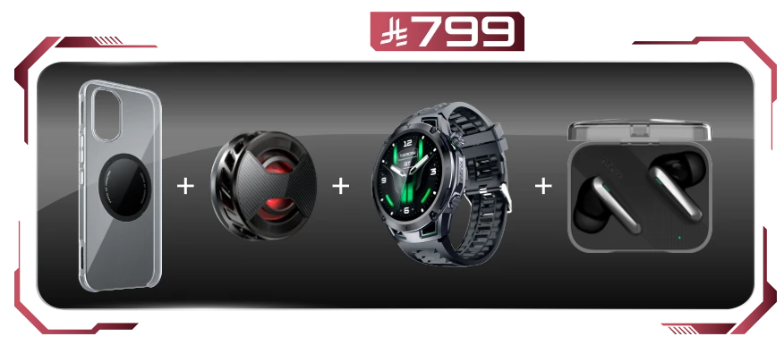
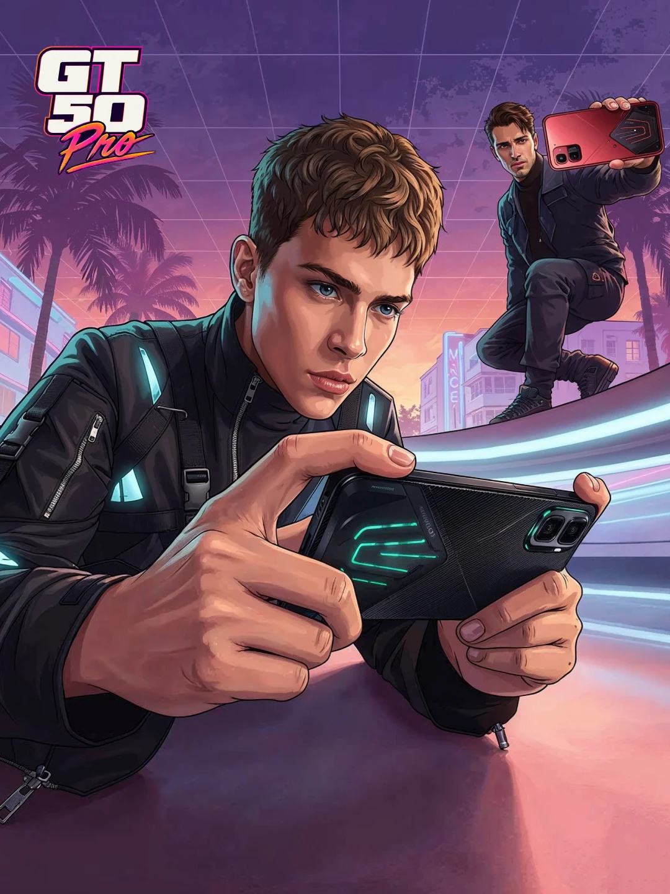
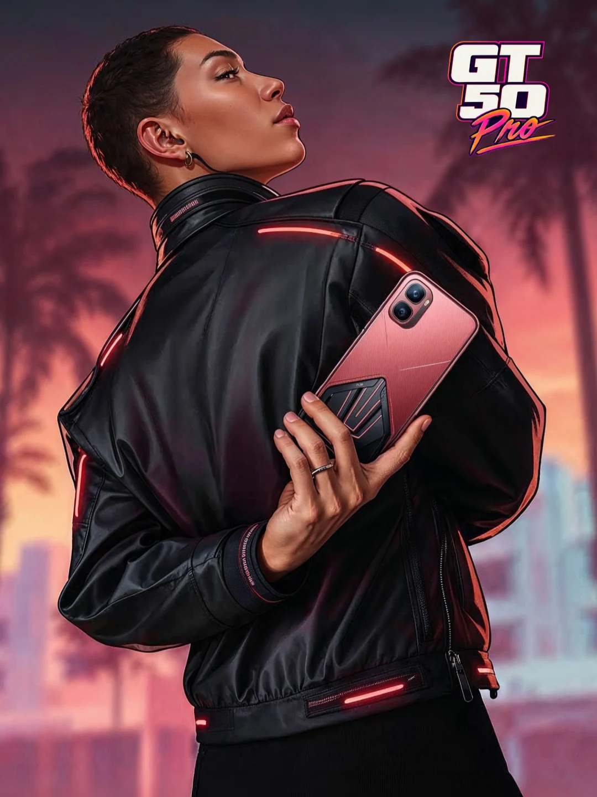
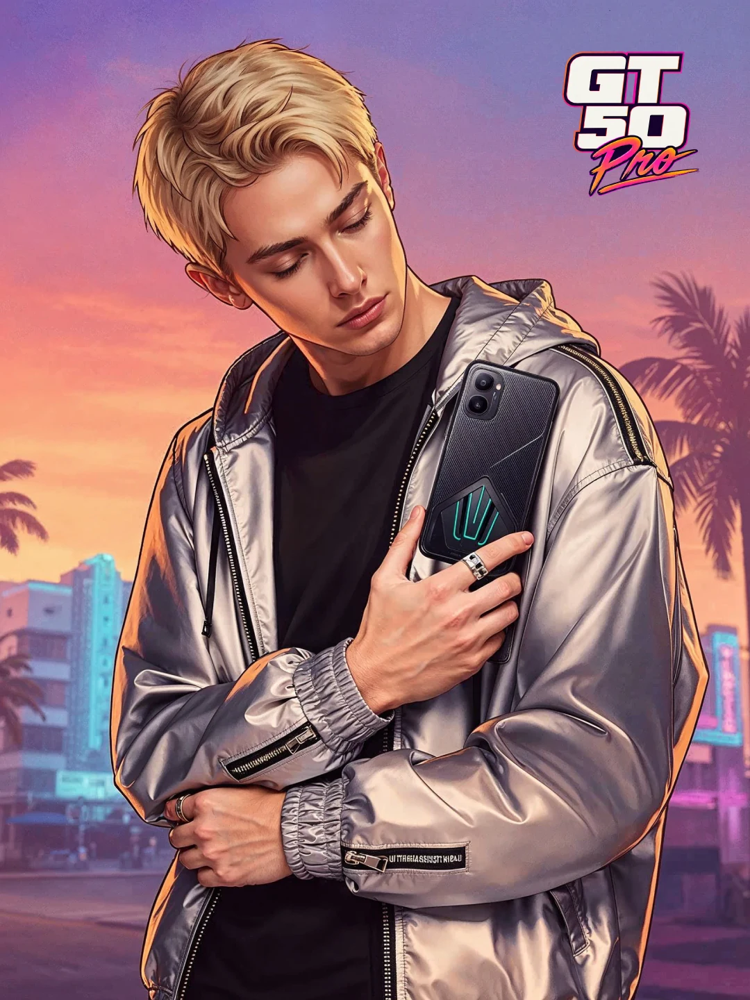
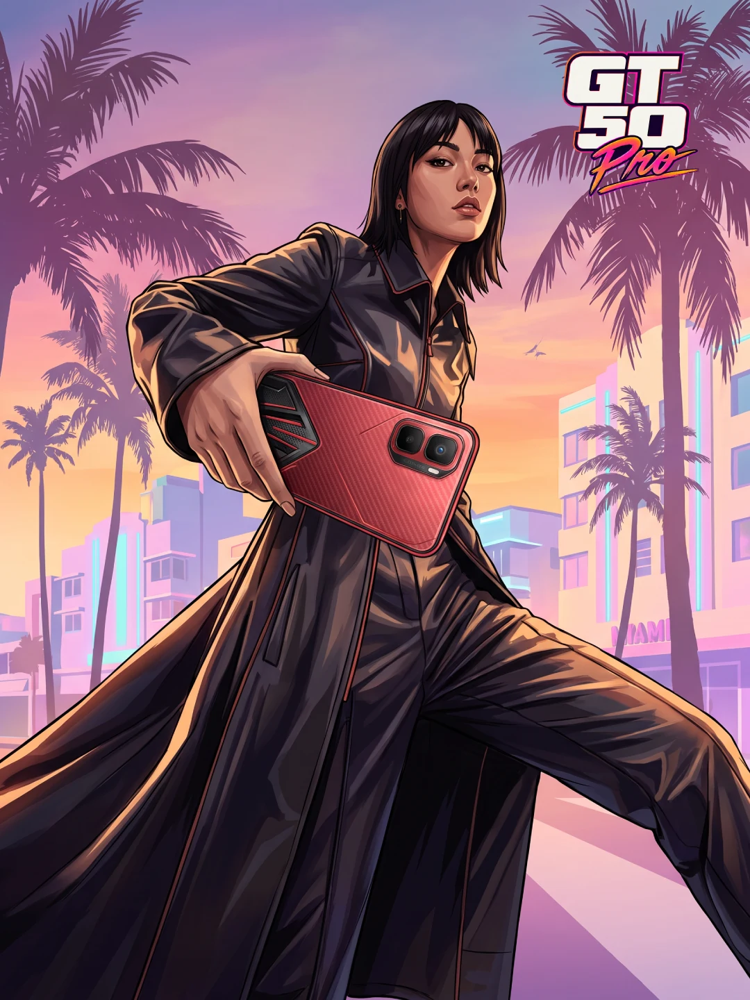
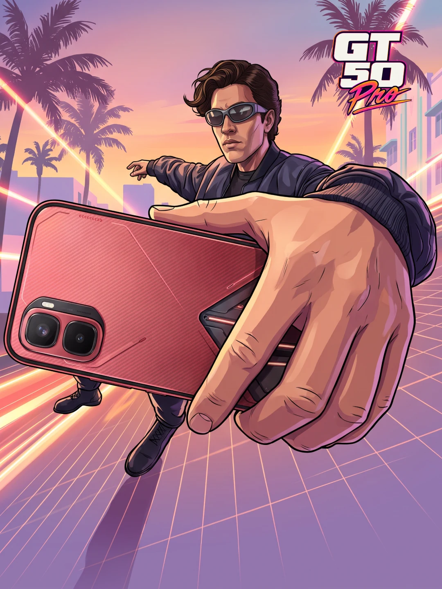
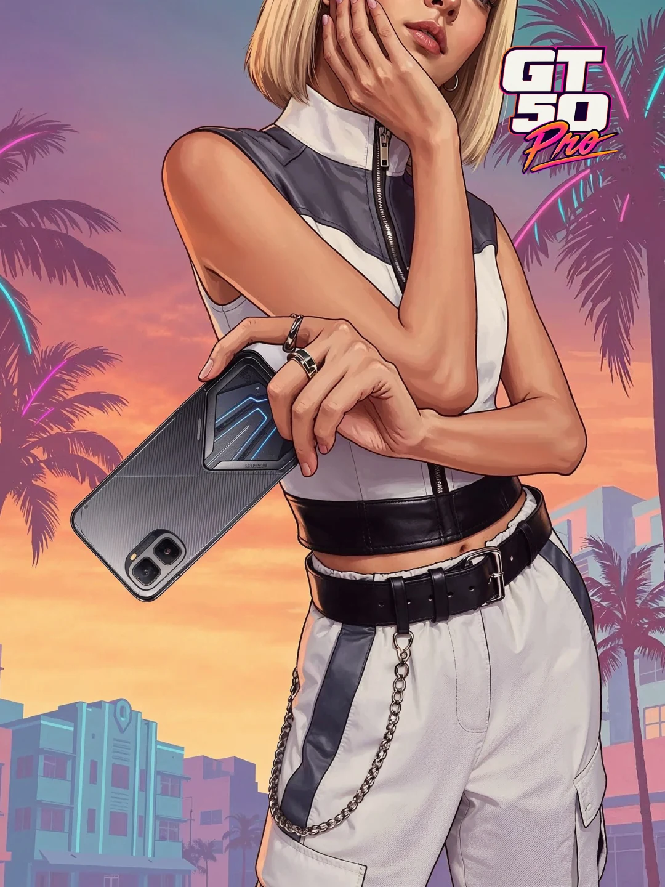
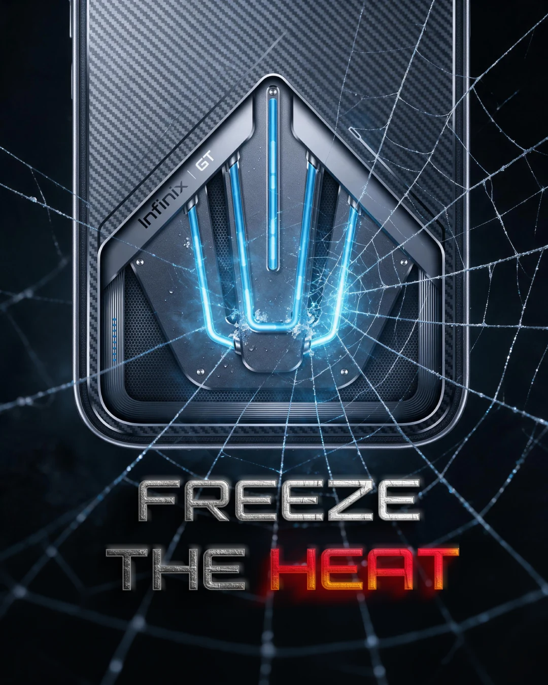
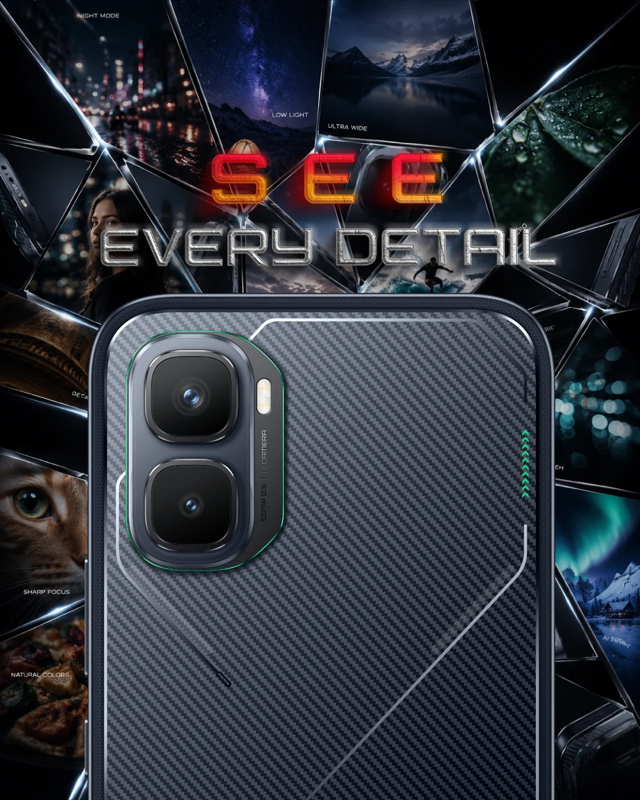
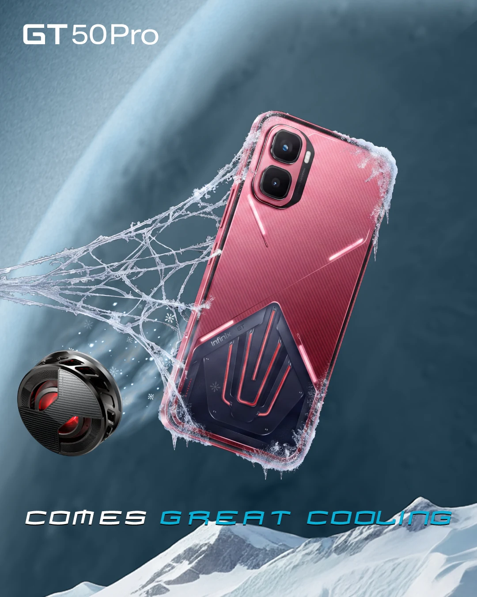

Infinix
GT 50 Pro
Campaign visuals, Saudi localization & AI-led trend concepts
A product campaign combining a global key visual, a locally designed gift bundle and AI-powered creative concepts inspired by gaming and film trends.

One product.
Multiple creative directions.
The main key visual came from Infinix HQ. My contribution focused on shaping the Saudi-market message and extending the product campaign through a tailored gift bundle and AI-led trend concepts.
The Main KV was supplied by HQ. I developed the Arabic slogan to suit the Saudi market and designed the Gift Bundle to align with the KV's visual style.
From the HQ visual
to a local touchpoint.
The original GT 50 Pro key visual established the campaign direction. The gift bundle was designed to carry the same visual language into the product gifting experience.

GTA VI
Gaming trend visuals.
An AI-led concept I developed to tap into the anticipation around GTA VI, bringing the GT 50 Pro into a recognisable gaming-inspired visual world and demonstrating my AI creative workflow.






Spider-Man
A trend linked to the product.
An AI-led idea developed to join the Spider-Man movie conversation, connecting the film's visual cues with the GT 50 Pro and a Saudi-market context. The video is intentionally placed between the two stills as requested.


GT Spider Web
Four connected frames.
A four-part visual sequence developed from the same Spider-Man trend. The four designs are kept together in one horizontal strip so their relationship reads as a single connected idea.
